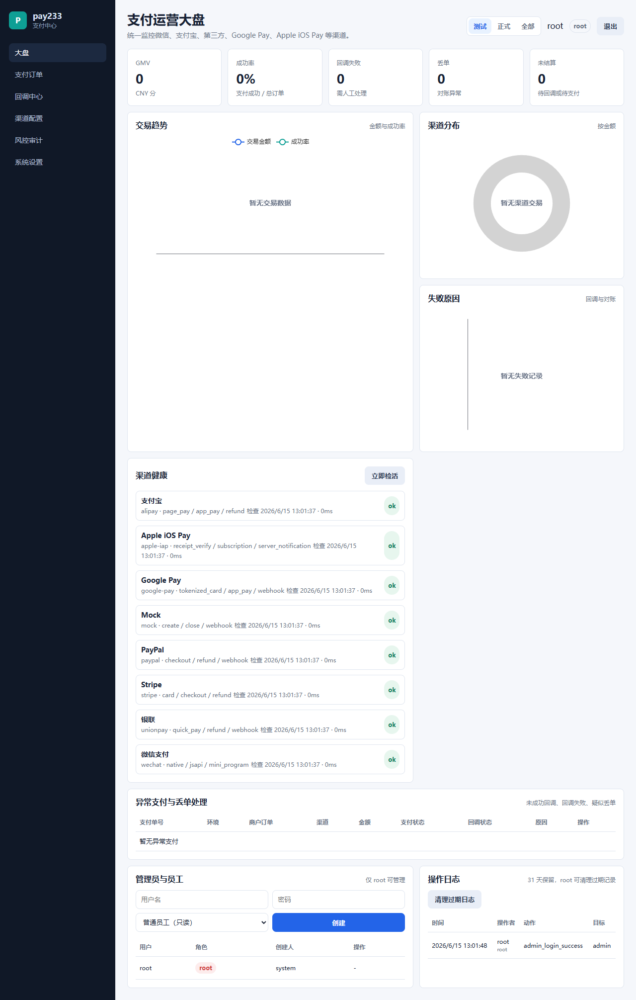

统一接入
微信、支付宝、Stripe、PayPal、Google Pay、Apple iOS Pay、银联和通用第三方渠道共享同一套支付 API。
统一支付中心操作手册
本文档覆盖 pay233-server 安装、渠道配置、签名接入、后台管理、审计留痕、渠道检活、自动化验证和 GitHub Pages 发布。

微信、支付宝、Stripe、PayPal、Google Pay、Apple iOS Pay、银联和通用第三方渠道共享同一套支付 API。
同一个渠道可以配置 test 与 release 两套凭据、支付地址和健康检查策略，无需部署两套服务。
登录后查看大盘、异常支付、未成功回调、疑似丢单、渠道健康和不可随意删除的操作审计。
部署
默认端口是 5500，默认管理员账号密码是 root / root。首次部署后请立即修改管理员密码和签名密钥。
curl -fsSL https://raw.githubusercontent.com/neko233-com/pay233/main/scripts/install-server.sh | shiwr -useb https://raw.githubusercontent.com/neko233-com/pay233/main/scripts/install-server.ps1 | iexcurl -fsSL https://raw.githubusercontent.com/neko233-com/pay233/main/scripts/install-server.sh | sh -s -- v0.7.0配置
顶层 credentials 和 options 是共享默认值，environments.test 与 environments.release 只覆盖需要不同的字段。
{
"name": "wechat",
"provider": "wechat_pay",
"enabled": true,
"options": {
"pay_url_base": "https://pay233.local/wechat/pay"
},
"environments": {
"test": {
"credentials": {
"merchant_id": "wechat-test-mch",
"api_key": "test-key"
},
"options": {
"pay_url_base": "https://test.pay.example/wechat/pay",
"health_status": "ok"
}
},
"release": {
"credentials": {
"merchant_id": "wechat-release-mch",
"api_key": "release-key"
},
"options": {
"pay_url_base": "https://pay.example/wechat/pay",
"health_status": "ok"
}
}
}
}接入
业务方每次创建支付都带上 envType。同一个 out_trade_no 可以在测试和正式各存在一笔，Webhook 也按环境隔离更新。
{
"envType": "test",
"merchant_id": "merchant_1",
"out_trade_no": "order_10001",
"channel": "wechat",
"amount": { "currency": "CNY", "amount": 100 },
"subject": "测试订单"
}安全
接口签名使用 X-Pay233-Timestamp 与 X-Pay233-Signature，签名内容为 timestamp + "." + body 的 HMAC-SHA256 十六进制值。
api.signature_max_skew_seconds 调整。后台
后台入口是 /admin，必须先登录 /admin/login.html 才能进入 /admin/dashboard.html。
root 可以创建管理员和只读员工，并清理 31 天以外的审计记录。admin 可以处理支付异常、重试回调和触发渠道检活。employee 只读，可查看大盘、支付、审计和健康状态。运维
应用日志写入 logs/app-YYYY-MM-DD.log，支付事件写入 logs/payments/payment-YYYY-MM-DD.log，默认保留 31 天。
服务默认每 60 秒检查一次下游渠道。配置了环境覆盖后，健康状态会按 channel/test 和 channel/release 分别展示和审计。
go test -cover ./...
go vet ./...
powershell -NoProfile -ExecutionPolicy Bypass -File scripts/env-channel-e2e.ps1
powershell -NoProfile -ExecutionPolicy Bypass -File scripts/admin-e2e.ps1文档发布
仓库内置 .github/workflows/pages.yml，会把 docs/ 发布到 GitHub Pages。推送到 main 后执行发布脚本即可自动启用 Pages 并触发发布。
powershell -NoProfile -ExecutionPolicy Bypass -File scripts/publish-docs-pages.ps1上线检查
root / root 默认密码。PAY233_SIGNING_SECRET 与 PAY233_ADMIN_SESSION_SECRET。release 凭据，并保留可验证的 test 凭据。data/payments.jsonl、data/admin-users.json、data/audit.jsonl 和 31 天支付日志。